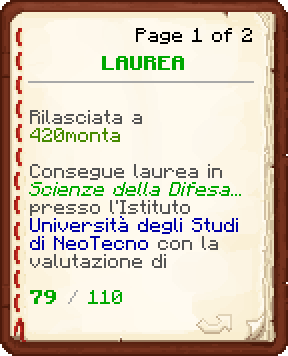

Simone Mussolini nasce a Firenze, dove cresce circondato dalla bellezza dell'arte e dal rigore della scienza. Fin da giovane si distingue per una curiosità insaziabile e un'intelligenza brillante, trovando nella programmazione un rifugio dove coltivare il proprio talento.
Il suo percorso lo conduce a praticare il parkour, passione che ne tempra il fisico e lo spirito competitivo. Tuttavia, un grave infortunio alla gamba sinistra segna una svolta, lasciandogli una lieve zoppia che trasforma in una spinta verso l'innovazione. Laureatosi in ingegneria informatica, si trasferisce a Neotecno per sviluppare sistemi avanzati di intelligenza artificiale.
Nonostante il successo nella tecnologia, Simone sente il bisogno di un impegno più concreto per la comunità. Decide quindi di arruolarsi nei Vigili del Fuoco, dove intende unire la sua agilità e le sue competenze tecniche per salvare vite e servire la città.
 Laurea in Scienze della Difesa e Sicurezza
Laurea in Scienze della Difesa e Sicurezza

Diploma